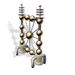

Hydrogen collector
Hydrogen collector collects Hydrogen from Martian atmosphere. Hydrogen is mainly used as rocket fuel for spaceships that transfer resources and goods between Martian colonies and Earth.
